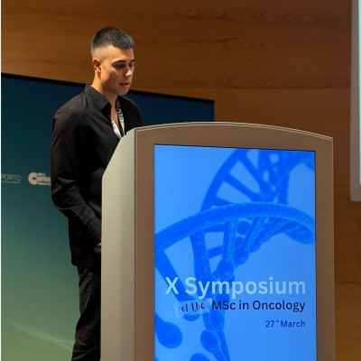

Professional portfolio
Biology Researcher
Bachelor’s degree in Sports Management from Universidade da Maia, with experience in youth football, sports event organization, and operational management. Over a decade of experience as a federated athlete and youth assistant coach. Seeking to develop my career in sports management, with a particular interest in youth football.

Experience in youth football, sports event organization and operational management, including a curricular internship at Lusitânia de Lourosa FC and experience as an assistant coach.
View full experience →Sports management projects focused on youth football, event organization, club-parent communication and the development of solutions for sports organizations.
View projects →Sports management, event organization, team coordination, communication, operational management eTorneio, emJOGO, Microsoft Office, Canva and digital tools.
View skills →Bachelor's Degree in Sports Management — Universidade da Maia. Academic background focused on sports management, marketing, events and organizational management.
Learn more →